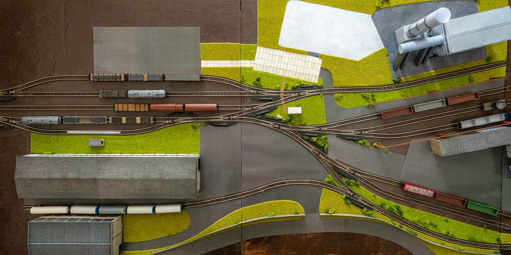

STAVBA
Jak to vzniká
Průběh prací od holého rámu až po finální detaily kolejí, budov a průmyslové infrastruktury.
PROSINEC 2025
Rozkreslení kolejiště na papír
V prosinci 2025 se většina kolejiště rozkreslila na papír 1:1 aby se mohly naměřit délky kolejí a počty výhybek.
LEDEN 2026
Dřevěné rámy a pokládka prvních kolejí
Začátkem ledna 2026 byly objednány tři dřevěné rámy na kterých se jednotlivé části kolejiště nachází. Koncem ledna začala první pokládka kolejí na dvou hlavních rámech.
BŘEZEN 2026
Hlavní pokládka kolejí
V březnu 2026 byly položeny téměř všechny koleje na dvou hlavních rámech, vzniklo tak téměř celé seřadiště, koleje k elektrické peci a šrotovému poli a také první kolej na překladišti.
DUBEN 2026
První krajina
V dubnu 2026 se na kolejišti objevila první silnice, zatravněná plocha a také první budovy.
KVĚTEN 2026
Zkušební jízdy
V květnu 2026 se uskutečnilo velké provozní testování prvních dvou modulů kolejiště.
SRPEN 2026
Rozšiřující modul elektrické pece
V srpnu 2026 byl doplněn rozšiřující modul na kterém hned vyrostla budova elektrické pece a válcovny.
ŘÍJEN 2026
Kompletní seřadiště
V říjnu 2026 došlo ke zprovoznění modulu který zahrnuje druhé zhlaví seřadiště, poprvé tak byly v provozu čtyři moduly.